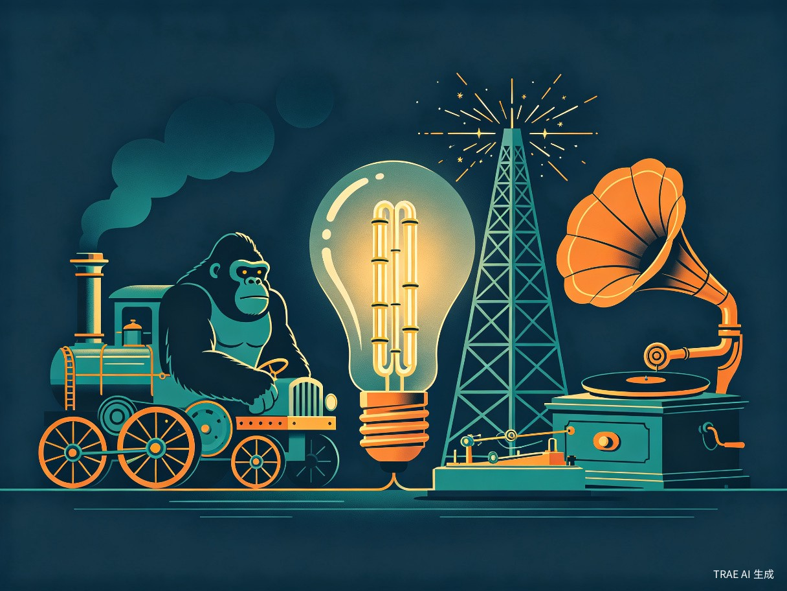

第四章：石之战争篇 — 能量与通信

石之战争篇是千空与司帝国的最终对决。在这一篇章中，千空不仅要赢得军事上的胜利，更要通过科学的力量证明文明的价值。
篇章背景
司（Tsukasa）主张清除成年人、建立"年轻力量"的原始世界，千空则坚持用科学重建文明。两人的冲突不仅是武力对抗，更是理念之争。
水车动力Water Wheel Power
剧中描述
千空利用河流的水力驱动水车，为铁的冶炼提供持续的机械动力。水车取代了人力，使冶炼效率大幅提升。
科学原理
水车利用水的重力势能转化为机械能。水流冲击水车叶片，驱动水车旋转，通过传动轴和齿轮将动力传递到冶炼炉的风箱等设备。
现实对照
水车是人类最早利用自然动力的装置之一。中国古代的水车在汉代已有记载。水车是工业革命前最重要的动力来源。[16]
准确性评估
水车驱动冶炼的设计完全合理。
高度准确棉花糖机拉金丝Cotton Candy Machine Gold Wire Drawing
剧中描述
千空需要极细的金丝用于制造电子元件，但没有精密的拉丝设备。他巧妙地利用棉花糖机的离心原理：将金熔化后通过旋转的离心力甩出，形成极细的金丝。
科学原理
棉花糖机利用离心力将熔融的糖浆通过小孔甩出，在空气中迅速冷却凝固成细丝。千空将这一原理应用于熔融的金（熔点1064°C）。
现实对照
这是一种完全原创的创意应用，现实中没有使用棉花糖机制造金丝的先例。传统金属拉丝使用拉丝模具（draw plate）。[17]
准确性评估
从物理原理上讲可行，但控制金丝的均匀性和直径极其困难。
物理可行，实践存疑钨丝灯泡Tungsten Filament Light Bulb
剧中描述
千空制造了白炽灯泡来照亮黑暗。他最初使用碳化竹丝作为灯丝，后来改进为更耐用的材料。灯泡需要真空环境以防止灯丝氧化烧毁。
科学原理
白炽灯泡的工作原理是电流的热效应。电流通过高电阻的灯丝时，使灯丝温度升高到白炽发光（约2000-3000°C）。
现实对照
英国科学家约瑟夫·斯旺（Joseph Swan）于1878年首次展示了碳丝灯泡。爱迪生在1879年发现碳化竹丝可以持续发光超过1200小时。[18]
准确性评估
碳化竹丝灯泡的设计与爱迪生的方案一致，但千空需要同时解决真空泵、密封、导线等多个技术难题。
原理正确，系统集成难度极大锌碳电池Zinc-Carbon Battery
剧中描述
千空改进了伏打电池，制成了更实用的锌碳干电池。使用锌筒作为负极、碳棒作为正极、氯化铵溶液作为电解质。
科学原理
锌碳电池中，锌筒（负极）发生氧化反应：Zn → Zn²⁺ + 2e⁻；碳棒（正极）上二氧化锰发生还原反应。
现实对照
锌碳干电池由法国工程师乔治·勒克朗谢（Georges Leclanché）于1866年发明。[19]
准确性评估
锌碳电池的结构和原理在作品中准确。
高度准确手机/无线电通信网Wireless Communication Network
剧中描述
千空利用真空管（电子管）、塑料外壳和金丝，制造了便携式无线通信设备（类似手机），可以实时传输语音。
科学原理
无线电通信基于电磁波传播。声音信号通过麦克风转换为电信号，经过真空管放大和调制后，由天线发射为电磁波。真空管（三极管）可以实现信号的放大和调制。
现实对照
无线电通信的奠基人是意大利发明家马可尼（Guglielmo Marconi），1895年成功进行了首次无线电报实验。李·德福雷斯特（Lee de Forest）于1907年发明了三极管。[20]
准确性评估
无线电通信的原理正确，但千空在原始条件下制造真空管、精密电路和便携式设备，难度被极大低估。
原理正确，制造难度被严重低估蒸汽机（蒸汽大猩猩号）Steam Engine (Steam Gorilla)
剧中描述
千空制造了一台蒸汽动力车辆——"蒸汽大猩猩号"。蒸汽机的建造标志着千空的科技树正式进入工业革命阶段。
科学原理
蒸汽机利用水的相变能量。水在锅炉中加热沸腾产生高压蒸汽，蒸汽推动活塞运动，通过曲轴连杆机构将往复运动转化为旋转运动。
现实对照
第一台实用的蒸汽机由托马斯·纽科门（Thomas Newcomen）于1712年发明。詹姆斯·瓦特（James Watt）在1769年进行了关键改进。[21]
准确性评估
蒸汽机的基本原理正确，但制造一台可移动的蒸汽动力车辆需要精密的机械加工。
原理正确，精密加工难度被低估录音与播放设备Phonograph / Record Player
剧中描述
千空发现父亲伊志帆未来（Byakuya）在石化前留下了录音信息。为了播放这段录音，千空制造了留声机。
科学原理
留声机利用声波的机械记录原理。录音时，声音使振膜振动，唱针在旋转的蜡筒上刻下波纹状沟槽。播放时，唱针沿沟槽移动，振动被传递到振膜和喇叭还原为声音。
现实对照
留声机由托马斯·爱迪生（Thomas Edison）于1877年发明。埃米尔·柏林纳（Emile Berliner）在1887年发明了唱片式留声机。[22]
准确性评估
留声机的原理正确，但精密的机械加工是主要挑战。
原理正确，精密加工难度被低估铅酸蓄电池Lead-Acid Battery
剧中描述
千空制造了铅酸蓄电池作为大容量储能设备。蓄电池可以反复充放电，为蒸汽机和无线电设备提供稳定的电力供应。
科学原理
铅酸蓄电池使用铅（Pb）作为负极、二氧化铅（PbO₂）作为正极、稀硫酸作为电解质。Pb + PbO₂ + 2H₂SO₄ → 2PbSO₄ + 2H₂O
现实对照
铅酸蓄电池由法国物理学家加斯东·普兰特（Gaston Planté）于1859年发明。[23]
准确性评估
铅酸蓄电池的原理和结构在作品中准确。
高度准确